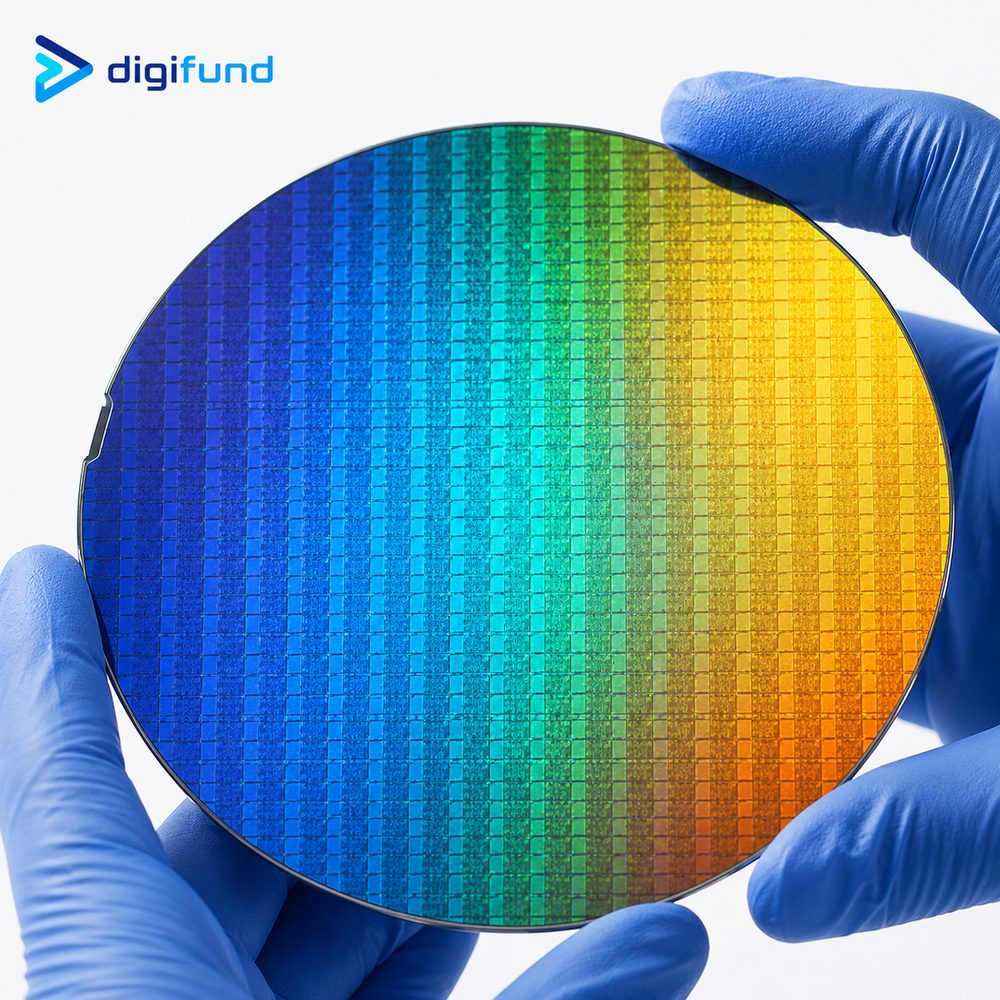

Contents
1. What is a wafer grade?
A grade tells you which inspection level and tolerances a wafer meets, not that it is made of a different material. The same CZ silicon ingot can yield Prime, Test and Dummy wafers: wafers that pass the tightest limits on particles, flatness, resistivity and surface are graded Prime; those that miss one or more limits drop to Test; wafers with no guaranteed specs become Dummy.
Names and exact limits are not fully standardised between manufacturers. The CZ vs FZ silicon wafer article gives a short overview of the three grades; this one goes into each specification and how to pick a grade for a specific task.
2. Prime wafer
Prime wafers are the top grade. The front side is mirror-polished, and each wafer (or a representative sample of the lot) is measured for resistivity, thickness, TTV, bow/warp and surface particle count. Every parameter must fall within the ordered range.
Use Prime when the result depends on the substrate itself: real device fabrication, electrical measurements that need the correct resistivity, high-resolution lithography that needs a flat substrate, or the final run of a thesis or paper.

Digifund's catalog lists Prime CZ-Si items with these specs: 2" (100) P- or N-type, 0.01–0.02 Ω·cm, double-side polished, 525 ± 25 µm thick; 4" (100) N-type 1–10 Ω·cm double-side polished or P-type 1–10 Ω·cm single-side polished, 525 ± 25 µm thick; 6" P-type (100) 1–100 Ω·cm or N-type (111) 1–10 Ω·cm, 675 ± 25 µm thick; 8" (100) P- or N-type, 725 ± 25 µm thick. See the full list on the silicon wafer & substrate page.
3. Test, monitor and mechanical wafers
Test wafers use the same base material but may miss some limits: a wider resistivity range (sometimes only the dopant type is stated), looser TTV and bow/warp, and a few minor surface or edge defects. For most process trials these differences do not affect the result.
Within the test family there are two names based on use:
- Monitor wafer: runs alongside a real process batch to measure the outcome, such as oxide thickness, deposition rate, etch rate or the particles a tool adds. Because it must reveal small changes, a monitor wafer usually needs a clean, flat surface, sometimes close to Prime on particles.
- Mechanical wafer: used only for mechanical purposes such as robot teaching, cassette checks and chuck alignment. No electrical specs are needed, only the right diameter, thickness and flat/notch type.
4. Dummy and reclaim wafers
Dummy wafers are the lowest grade, with no guaranteed electrical specs and often only approximate diameter and thickness. They may show scratches, stains or edge chips. Dummies fill empty slots in a furnace boat (keeping heat and gas flow even for the real wafers), warm up tools, or let students practise handling.
Reclaim wafers are used wafers that have been stripped and repolished. Because material is removed, they are usually thinner than nominal, and their doping or metal-contamination history is not always clear. Reclaim suits dummy or mechanical test use, not devices or electrical measurements.
5. Typical specification comparison
The table below summarises common differences for 100–150 mm silicon wafers. These are typical industry ranges, not guarantees: actual limits vary by manufacturer, diameter and thickness, so always check the datasheet for your lot.
| Parameter | Prime | Test | Dummy / reclaim |
|---|---|---|---|
| Surface particles | Low, typically a few to a few tens of particles ≥ 0.2–0.3 µm per wafer | Looser or not stated; monitor wafers can be close to Prime | Usually not guaranteed |
| TTV | Tight, typically around ≤ 5–10 µm | Looser, typically around ≤ 10–15 µm | Loose or not stated |
| Bow / warp | Typically around ≤ 30–40 µm | Typically around ≤ 40–60 µm | Loose or not stated |
| Resistivity | Within the ordered range and measured | Wider range, sometimes only P/N type stated | Not guaranteed, dopant type may be mixed |
| Surface and edge | Mirror polish, no visible scratches or stains under bright light | Polished, a few minor defects allowed | May have scratches, stains, edge chips; reclaim usually thinner |
| Typical use | Devices, electrical measurements, high-resolution lithography | Process trials, calibration, monitoring | Furnace filler, tool warm-up, handling practice |
6. Which grade for which task?
| Task | Recommended grade | Why |
|---|---|---|
| Lithography tests: resist coating, dose and focus | Test; Prime for very fine features | Test is flat enough for most trials; when resolution nears the tool limit, Prime TTV makes results more reliable |
| Equipment calibration: deposition, etch, oxidation rates | Test / monitor | Needs a measurable surface, not exact resistivity |
| Furnace boat filler, tool warm-up, robot teaching | Dummy / mechanical | Only needs the right size and to survive the heat |
| R&D devices, electrical tests, publishable data | Prime | Resistivity, orientation and cleanliness directly affect results |
| Teaching labs | Dummy for handling practice, Test for process lab sessions | Students will break wafers; lab sessions only need clearly visible results under a microscope |
The lithography steps are covered in the photolithography process. How to split grades by project type and for university labs is discussed further in choosing wafers for research.
7. How to save on wafer budget
- Split quantity by phase. Order Dummy for handling practice, Test for trials and calibration, and Prime only for real device runs. This is the biggest saving, as analysed in silicon wafer pricing.
- Keep the other specs the same. Test wafers should match the diameter, thickness, orientation and dopant type of the Prime wafers you will use later, so process settings found in trials transfer to the real run.
- Do not save in the wrong place. Dummy and reclaim wafers carry no resistivity or cleanliness guarantee, so do not use them for electrical measurements or processes sensitive to metal contamination.
- Choose SSP if you only process one side, and relax the resistivity tolerance when the application allows.
- Pick a size that just fits your tools. If you need many small chips, one larger wafer can be cut into pieces; see silicon wafer sizes.
8. Specs to send for a quote
For an accurate quote per grade, send:
- Material and growth method (CZ or FZ), diameter (inch / mm), thickness and tolerance.
- Crystal orientation, dopant type (P or N) and resistivity range.
- Single-side (SSP) or double-side (DSP) polish, flat or notch.
- Quantity per grade: how many Prime, how many Test, how many Dummy.
- What each group is for, so Digifund can propose the right grade or an alternative when a grade is unavailable.
Frequently asked questions
What is the difference between prime, test and dummy wafers?
All three can come from the same silicon ingot. Prime meets the tightest limits on particles, TTV, bow/warp, resistivity and surface. Test may miss some limits and is used for trials and calibration. Dummy has no guaranteed electrical specs and is used as furnace filler or for handling practice.
Is a monitor wafer the same as a test wafer?
A monitor wafer belongs to the test family but is used to measure a process run, such as film thickness, etch rate or added particles. Because it must reveal small changes, it usually needs a cleaner surface than an ordinary test wafer.
Can I use test wafers for lithography trials?
Yes, for most trials such as resist coating and dose and focus tests. When features approach the tool's resolution limit, use Prime, because its tighter TTV and flatness keep focus uniform across the wafer.
Which wafer grade should a teaching lab buy?
Use Dummy for handling and cassette-loading practice, Test for lithography, etching and oxidation sessions, and buy Prime only for projects that need publishable data. This split stretches the wafer budget across many more sessions.
Need the right wafer grade mix for your lab?
Tell us each task and the expected quantities, and Digifund's technical team will propose a Prime, Test and Dummy split with a matching specification set and a quote. Digifund supports small R&D and teaching orders.
Get technical advice View wafer catalog